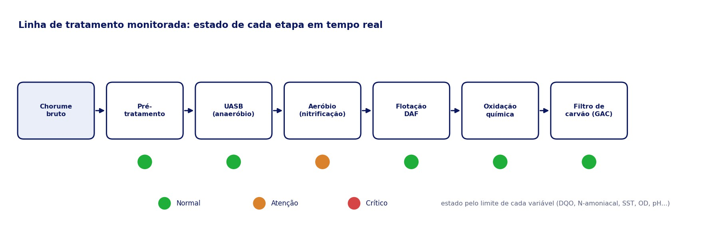
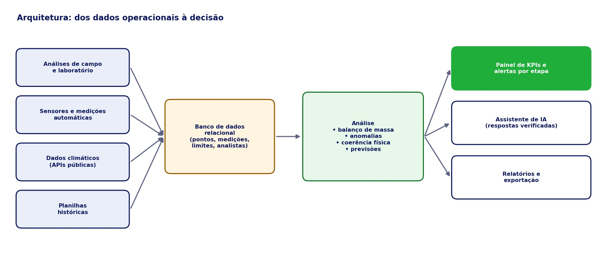
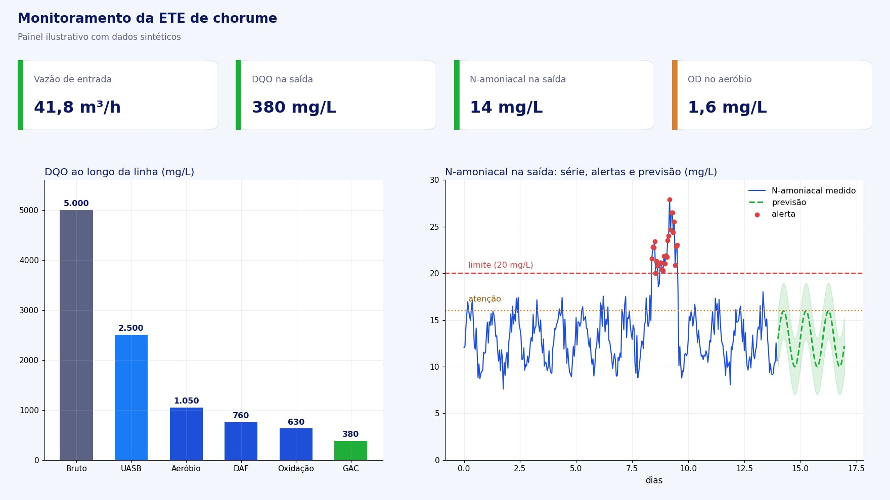

Problema / desafio do cliente
Em uma estação de tratamento de chorume, os dados de operação ficam espalhados: análises de laboratório em planilhas, leituras de campo em cadernos, medições automáticas em outro sistema e dados de chuva em sites externos. Com isso, a equipe demora a perceber desvios, não enxerga a eficiência de cada etapa e tem dificuldade para comprovar a conformidade.
O objetivo foi criar uma plataforma única que integre todos os dados operacionais e mostre, em tempo real, o estado de cada etapa do tratamento.
Contexto e características do processo
- Estação de tratamento de chorume de aterro sanitário com linha em série: pré-tratamento, reator anaeróbio (UASB), tratamento aeróbio com nitrificação, flotação (DAF), oxidação química e filtro de carvão ativado (GAC).
- Dezenas de variáveis por ponto de monitoramento: vazão, DQO, N-amoniacal, nitrito, nitrato, sólidos, pH, oxigênio dissolvido, condutividade e temperatura.
- Operação em turnos, com operadores e supervisores registrando medições.

Diagnóstico e dados analisados
- Dados dispersos em planilhas e sistemas sem integração.
- Sem limites operacionais centralizados, cada desvio dependia da experiência de quem olhava o número.
- Sem visão de balanço de massa e de eficiência por etapa.
- Sem previsão: os problemas eram percebidos só depois de acontecer.
Metodologia utilizada
- Modelagem do banco de dados relacional: unidades de tratamento, pontos de monitoramento, medições, limites operacionais e analistas.
- Padronização de nomes, unidades e variáveis em uma única fonte de referência.
- Regras de estado (normal, atenção, crítico) por variável e por ponto, com limites operacionais, contratuais e legais.
- Rotinas de análise: estatística, balanço de massa e de nitrogênio, detecção de anomalias e validação de coerência física entre etapas.
- Modelos de previsão (ARIMA, suavização exponencial e regressão).
- Simulação do desempenho das etapas com modelos cinéticos simplificados.
- Painel web com páginas por etapa, exportação de dados e assistente de IA.

Solução de engenharia desenvolvida
A plataforma tem um painel principal com os KPIs da planta e o estado de cada etapa, e páginas específicas para o reator anaeróbio, o tratamento aeróbio, a flotação, a oxidação e o filtro de carvão.

- Alertas automáticos quando uma variável passa do limite de atenção ou crítico.
- Previsões das próximas horas e dias para antecipar desvios.
- Assistente de IA que responde perguntas sobre a operação, com valores críticos sempre consultados no banco de dados (modo determinístico) e linguagem natural opcional.
- Exportação de dados para relatórios.
Tecnologias e processos envolvidos
- Python e Streamlit para a aplicação web.
- SQLite com esquema normalizado e migrações.
- pandas, NumPy, SciPy, scikit-learn e statsmodels para análise e previsão.
- Plotly para gráficos interativos.
- Integração com APIs de dados climáticos.
- Testes automatizados para cinética, balanço de massa, limites e previsões.
Modelagem, simulação e ferramentas computacionais
Modelos, simulações e ferramentas usados (balanços, CFD, Python, MATLAB, redes neurais, DMD, dashboards…) e o que cada um permitiu avaliar ou decidir.
Resultados obtidos
- Uma única fonte de verdade para todos os dados operacionais da estação.
- Estado de cada etapa visível em tempo real, com semáforo e alertas.
- Eficiência por etapa e balanços de massa calculados automaticamente.
- Previsões que permitem agir antes de o efluente sair do padrão.
- Menos tempo montando planilhas e mais tempo analisando e corrigindo a operação.

CAPEX/OPEX e análise técnico-econômica
Quando aplicável: estimativas de CAPEX e OPEX, comparação entre alternativas, custo por m³ ou por tonelada, payback.
Escopo e responsabilidades da GETA
A GETA foi responsável por:
- levantamento dos dados e dos pontos de monitoramento;
- modelagem do banco de dados e padronização das variáveis;
- regras de estado, análises e modelos de previsão;
- desenvolvimento do painel e do assistente de IA;
- testes e documentação.
Principais entregáveis
- Plataforma web de monitoramento com páginas por etapa.
- Banco de dados relacional e rotinas de importação.
- Regras de alerta, balanços de massa e previsões.
- Assistente de IA para consultas operacionais.
- Exportação de dados e documentação técnica.
Galeria